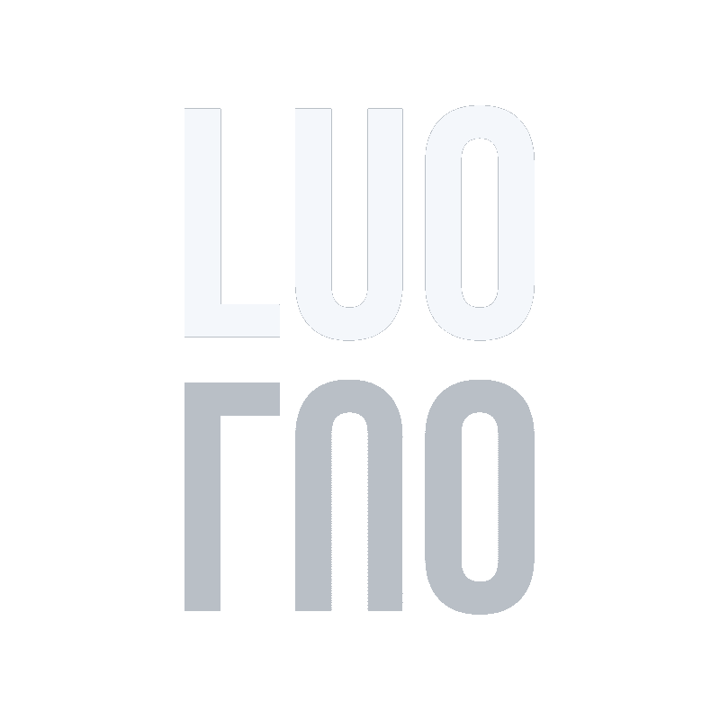

LUO is a Bittensor subnet that turns legal sources into validator-scored uncertainty map packets. Miners produce jurisdiction-aware maps. Validators reward the packets that preserve source boundaries instead of fabricating certainty.